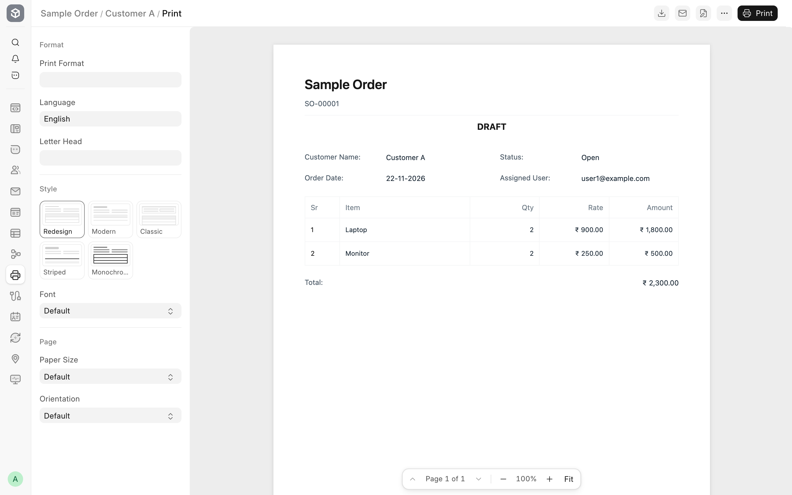
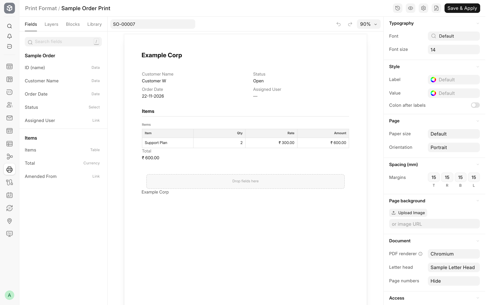

Printing¶
Every document in the desk can be printed or saved as a PDF. A Print Format controls what the printed page shows. Use the print view to print, download or email a document. Make a Print Format when the standard layout does not fit, for example when an invoice needs a custom header or a narrow receipt layout.
Core concepts¶
| Name | DocType | What it is |
|---|---|---|
| Print view | page print |
The preview at /desk/print/<DocType>/<name>. You pick the format, letter head, style and paper there. |
| Print Format | Print Format |
A layout for one DocType (or one report). Made in the Print Format Editor, in the classic Print Format Builder, or written as Jinja HTML. |
| Standard format | none | The layout Frappe makes from the form when no Print Format is selected. |
| Letter Head | Letter Head |
A header and footer (image or HTML) added to the top and bottom of a print. |
| Print Style | Print Style |
Site-wide CSS for printed pages. Standard styles: Redesign, Modern, Classic, Striped, Monochrome. |
| Print Settings | Print Settings (Single) |
Site defaults: PDF engine, page size, draft and cancelled printing, raw printing. |
| Print Heading | Print Heading |
A named heading text that a print can show. |
Print a document¶
- Open the document.
- Click the print icon in the form sidebar, or press Ctrl+P. The print view opens.
- In the sidebar, select a Print Format, Language and Letter Head.
- Select a Style, a Font, a Paper Size and an Orientation if you need them.
- Click Print to send the page to the browser print dialog.

The toolbar icons do these actions:
| Icon | Action | Shortcut |
|---|---|---|
| Download | Download PDF. Makes the PDF on the server. | Ctrl+Shift+P |
| Email. Opens the email composer with the print attached. | Ctrl+Shift+E | |
| Form | Goes back to the form. | |
| Print button | Print. Opens the browser print dialog. | Ctrl+P |
The ... menu has Full Page, Refresh, Set as Default Format, Print Settings and Customize. Raw Printing Setting shows when raw printing is on. Select Network Printer shows when Enable Print Server is on in Print Settings.
When Print the PDF (print_generated_pdf) is on in Print Settings, Print prints the PDF from the server instead of the page preview.
Note
Draft documents print with a "Draft" heading when Always add "Draft" Heading for printing draft documents is on in Print Settings. Cancelled documents print only when Allow Print for Cancelled is on.
Make a Print Format with the editor¶
A new Print Format that is not a custom HTML format uses the Print Format Editor. The form sets Print Format Editor (print_format_builder_beta) and PDF Generator chrome for a new format.
- Go to
/desk/print-format/new. - Enter a name and select the DocType, for example
Sample Order. - Save. The editor opens at
/desk/print-format-builder-beta/<name>. - Select Start from default to begin with all fields of the DocType, or Start blank.
- Drag fields from the left panel onto the page.
- Click Save & Apply to make the change live.
To open the editor later, click Edit Format in the Print Format form.

The left panel has four tabs:
| Tab | Content |
|---|---|
| Fields | The fields of the DocType and of its child tables. |
| Layers | The tree of sections and fields on the page. |
| Blocks | Section, Page Break, Custom HTML (or Typst for a Typst format), Spacer, Divider, Image, Barcode, Custom Table, Text and Linked Field. |
| Library | Saved snippets that you can reuse. |
The right panel has the sections Typography, Style, Page, Spacing (mm), Page background, Document (PDF renderer, Letter head, Page numbers), Access (roles that may print with this format) and Custom CSS.
The editor keeps your edits as a working draft (draft_data) until you click Save & Apply. The history icon shows saved versions. The record box at the top picks the document used for the preview.
PDF renderer¶
| Value | Label in the editor | Notes |
|---|---|---|
chrome |
Chromium | Default for editor formats. Renders HTML with headless Chromium. |
PlutoPrint |
PlutoPrint (light) | Falls back to Chromium for a format it cannot render. |
Typst |
Typst (fast) | Only for editor formats. Adds a Typst block and removes Custom HTML. |
WeasyPrint |
WeasyPrint | Shows only when a format already uses it. Marked "Deprecated, removed in version 17". |
Classic Print Format Builder¶
A format with Print Format Builder (print_format_builder) on and Print Format Editor off opens in the classic builder at /desk/print-format-builder/<name>. The form shows "The classic builder will be removed in version 17." Click Convert to new builder to move the layout to the editor. Restore classic layout brings back the backup of the classic layout.
Write a Jinja Print Format¶
Use a Jinja format when you need full control of the HTML.
- Open a new Print Format and select the DocType.
- Turn on Custom Format.
- Keep Print Format Type as
Jinja. - Write the template in HTML.
- Save.
<h2>{{ doc.customer_name }}</h2>
<p>{{ _("Order Date") }}: {{ doc.get_formatted("order_date") }}</p>
<table class="table table-bordered">
{% for row in doc.items %}
<tr>
<td>{{ row.item }}</td>
<td class="text-right">{{ row.get_formatted("qty") }}</td>
<td class="text-right">{{ row.get_formatted("rate", doc) }}</td>
</tr>
{% endfor %}
</table>
<p class="text-right">{{ _("Total") }}: {{ doc.get_formatted("total") }}</p>
The template gets doc, meta, layout, no_letterhead, letter_head, footer and print_settings, plus the Jinja globals such as frappe and _. Frappe validates the template on save.
A custom format can set PDF Generator to wkhtmltopdf, chrome, PlutoPrint, Typst or WeasyPrint. Empty uses the engine in Print Settings. Paper Size (A4, A5, A3, Letter, Legal, Receipt 80 mm, Receipt 58 mm) shows only for chrome and PlutoPrint.
Raw printing¶
For label and receipt printers, turn on Custom Format and Raw Printing, then write printer commands in Raw Commands. Turn on Enable Raw Printing in Print Settings first. The browser sends raw commands to the printer through the QZ Tray client.
Print Format for a report¶
Set Print Format For to Report and select the Report. Frappe sets Custom Format for report formats, so you write the HTML yourself.
Set the default format¶
- In the Print Format form, click Set as Default. For a custom DocType this sets
default_print_formaton the DocType. For other DocTypes it makes a Property Setter. - In the print view, use ... > Set as Default Format.
Disabling the default format removes it as the default after you confirm.
Letter Head¶
- Go to
/desk/letter-head/new. - Enter Letter Head Name.
- Set Letter Head Based On to
ImageorHTML. - Add the header image or the Header HTML.
- Set Footer Based On and add the footer the same way.
- Turn on Default Letter Head to use it when no letter head is picked.
Header and footer HTML are Jinja. They get doc when they render.
Print Settings¶
Go to /desk/print-settings.
| Field | Default | Description |
|---|---|---|
send_print_as_pdf |
1 | Attach prints to emails as PDF. |
repeat_header_footer |
1 | Repeat the letter head header and footer on each PDF page. |
print_generated_pdf |
0 | The Print button prints the PDF from the server instead of the page preview. |
pdf_generator |
chrome |
Default PDF engine: wkhtmltopdf, chrome or PlutoPrint. A format can override it. |
pdf_page_size |
A4 |
Default PDF page size. Custom shows pdf_page_height and pdf_page_width in mm. |
with_letterhead |
1 | Print with the default letter head. |
allow_print_for_draft |
1 | Allow printing of draft documents. |
add_draft_heading |
1 | Add a "Draft" heading to draft prints. |
allow_print_for_cancelled |
0 | Allow printing of cancelled documents. |
allow_page_break_inside_tables |
0 | Let a table split across pages. |
enable_print_server |
0 | Print to a network printer (Network Printer Settings, CUPS server and port 631 by default). |
enable_raw_printing |
0 | Allow raw command formats. |
print_style |
Redesign |
Default Print Style. |
font |
Default |
Default print font. |
font_size |
In points. Empty uses 9. | |
max_bulk_print_docs |
100 | Most documents in one bulk PDF export. |
max_concurrent_bulk_exports |
5 | Most bulk PDF exports one user can have queued or running at the same time. |
Note
The field help says wkhtmltopdf is deprecated and will be removed in version 17. When a format renders with wkhtmltopdf, the print view checks the installed version and warns if it is not the patched-Qt 0.12.x build.
For developers¶
- Get the HTML or PDF of a document in Python with
frappe.get_print. It uses the PDF engine from the format or Print Settings.
html = frappe.get_print("Sample Order", "SO-00001", print_format="Sample Order Print")
pdf = frappe.get_print("Sample Order", "SO-00001", as_pdf=True) # bytes, starts with b"%PDF-"
- Use
frappe.attach_print(doctype, name, ...)to get a PDF attachment dict (fname,fcontent) forfrappe.sendmail. - The download URL is
/api/method/frappe.utils.print_format.download_pdf?doctype=...&name=...&format=.... It checks print permission. It has a concurrency limit (frappe.concurrent_limit), not a per-user rate limit. - Add Jinja methods and filters for templates with the
jinjahook ({"methods": [...], "filters": [...]}). - Add a PDF engine with the
pdf_generatorhook. Frappe registersget_chrome_pdf,get_plutoprint_pdf,get_typst_pdfandget_weasyprint_pdf. - Other hooks:
get_print_format_template,on_print_pdf,pdf_header_html,pdf_body_html,pdf_footer_html. - A Print Format with Standard =
Yesis saved in the app and can be changed only in developer mode. See Print Formats.
Pitfalls¶
- A standard Print Format cannot be changed on a site. Duplicate it and edit the copy.
- Edits in the Print Format Editor do not print until you click Save & Apply.
- An editor format always renders with
chrome,PlutoPrint,TypstorWeasyPrint. Other values fall back tochrome. - The Access roles hide the format from users without one of the roles.